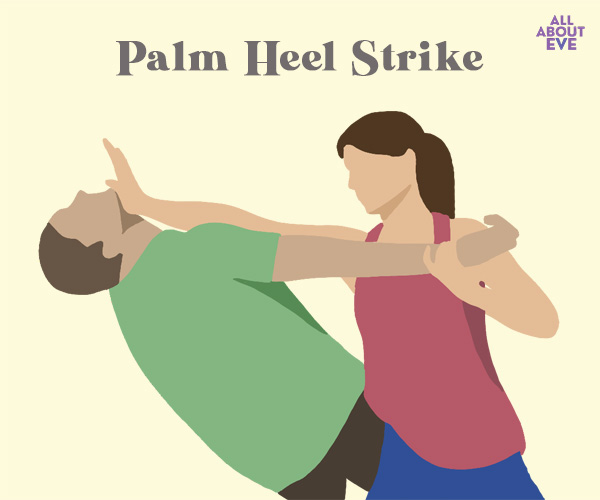
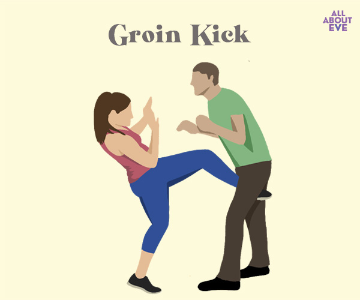
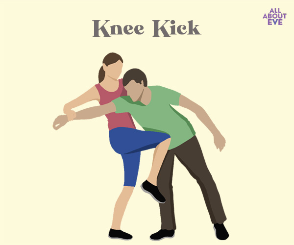
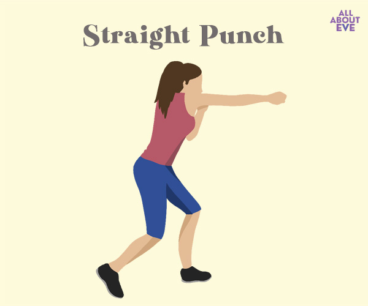
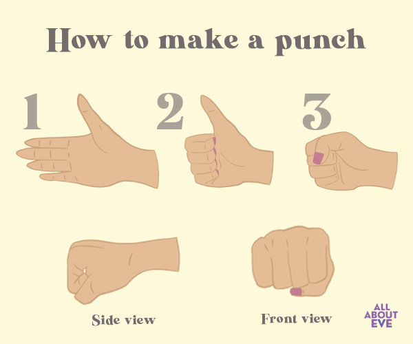
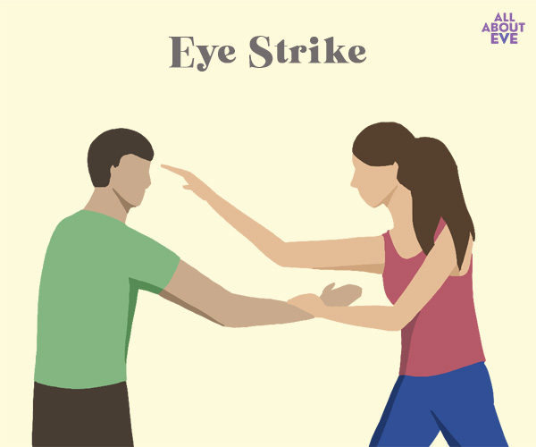
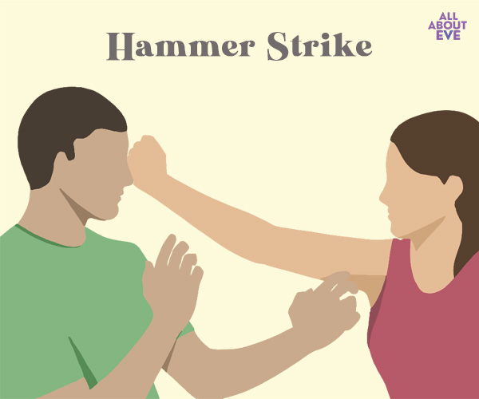

💡 Basic Safety Tips: Awareness is Key
Be aware of your surroundings and always trust your intuition. If a situation feels wrong, it probably is—leave immediately.
Stay in **well-lit and populated areas**, especially at night. If possible, avoid shortcuts through isolated or dark places.
Carry a **whistle, pepper spray, or personal alarm** (check local laws). Have it easily accessible in your hand or outer pocket, not buried in a bag.
Inform a **trusted friend or family member** about your itinerary and estimated time of arrival. Use a live location sharing feature if available.
Avoid distractions like headphones or constantly looking at your phone when walking alone. **Be present** and vigilant.
👊 Simple Self Defence Moves: For Quick Escape
The primary goal is to create an opportunity to **escape**, not to win a fight. Target vulnerable areas and run!
-

Palm Strike**Target:** Nose or Chin. Use the heel of your palm to strike upward and forcefully into the attacker’s nose or chin. This causes pain and disorientation, allowing you to run. -

Groin Kick**Target:** It is a highly effective way to get an attacker to release you. The groin is one of the most sensitive areas for men and hence a good body part to attack. You can use your knees to hit your attacker or use a front kick to the groin. -

Knee Strike**Target:** Groin or Midsection. Bring your knee sharply up. This is highly effective at close range for causing pain and briefly immobilizing the attacker. -

Straight Punch**Target:** A punch is the easiest way to get someone out of your personal space. But it is also important to remember to throw a proper punch. Else, you could end up with broken fingers.
-

Eye strike**Target:** A very simple self-defence move that can be used in any situation. An eye strike forces your attacker to loosen their grip on you and allows you to use a more forceful move or run away altogether. Since the eye is a sensitive area, striking this part renders the attacker helpless. -

Hammer fist strike**Target:** A hammer fist is a versatile strike and also a fairly easy self-defence move for women. You can throw a punch in any direction and from any position. Standing, sitting or even if you are lying down, you can strike a hammer fist. You can use a hammer fist to attack the throat, nose, jaw, stomach, or groin.
🚨 Emergency Contacts: Know Them By Heart
In an emergency, dial these numbers immediately or use the SOS button on your phone.
- Police: 100
- Women’s Helpline: 1091
- Ambulance/Fire: 102
▶️ Video Resources: Practice Makes Prepared
Watch and practice these techniques regularly to build muscle memory.
✅ Additional Safety Reminders
- Keep your phone **charged** and accessible at all times, with an emergency contact on speed dial.
- Attend **self-defence workshops** or classes offered by local NGOs/police for hands-on experience.
- Use security apps that share your live location with trusted contacts and have a panic button.
- Trust your gut feeling and **report suspicious behavior** immediately to authorities or security personnel.